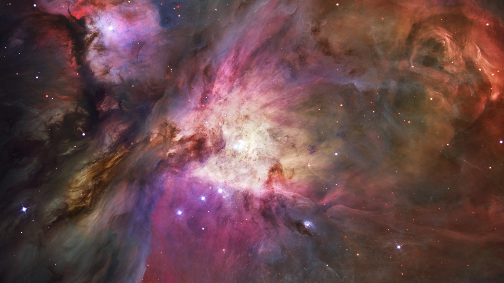

从你的图片开始
不展示模板角色。上传后，预览和生成包只使用你的素材。
PERSONAL DESKTOP COMPANION
不提供预设角色。上传你自己的图片，设置它的动作、语气和快捷功能，然后生成只属于你的桌宠。

没有预设宠物
这里将出现你的作品
CREATE / 01
本地处理 · 你的图片不会离开当前浏览器
CHARACTER
上传后可以继续在左侧调整外观。生成后的桌宠支持拖动、点击和右键菜单。
BEHAVIOUR
自定义入口
请先上传你的桌宠图片，再生成程序包。
DESIGNED TO BECOME YOURS
不展示模板角色。上传后，预览和生成包只使用你的素材。
把浏览器、游戏、工具或文件夹变成桌宠右键菜单里的快捷入口。
导出桌宠程序包，在电脑桌面上拖动、点击和使用你的自定义功能。
FLIGHT PLAN